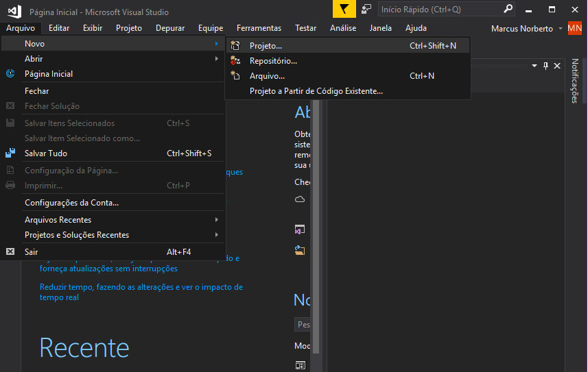
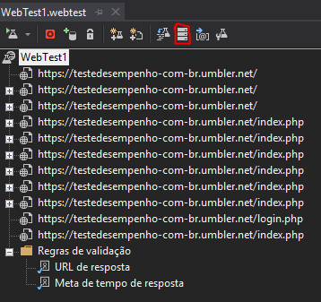

Teste de Desenpenho com a Ferramenta Visual Studio
O VisualStudio é uma ferramenta de desemvolvimento integrado da Microsoft, capaz de oferecer suporte completo para o desenvolvimento de software multiplatafoemas, apliações Web e desemvonvimento Mobile multiplataforma. A ferrmenta possuí diversas funcionalidades para o desenvolvimento de apliccações, sendo uma delas as ferramentas de teste de desenpenho que ela oferece. Essas funionalidades serão nosso foco neste artigo.
Versões
O VisualStudio é suportado atualmente por apenas as plataformas Windows e Mac. Sendo distribuidas em em tres tipos: Community, Professional e Enterprise. Como vamos focar apenas nas ferramentas de teste, vou mostrar apenas a diferenças entres elas das funcionalidades de teste. Para mais informações das disferrenças entre funcionalidade de cada verção cliqui aqui.

Lembrando que ambas versões podem ser baixadas gratuitamente, porém, as versões Professional e Enterprise teram limitações (Versão de teste). Umas das limitações é o numero de carga de usuario por teste de carga, limitando se apenas por 250 usuarios. A figura abaixo mostrar os valores atuais das versões pagas (Assinatutas padrões). Para mais informações cliqui aqui.
Instalação da Ferramenta
Como queremos realizar testes de desempenho devemos fazer o download da versão Enterprise. Quando terminar o download execute o arquivo "vs_enterprise.exe", aceite os termos de uso e instale a ferramenta. Ao chegar na tela de escolha de paotes clique em componentes individuais.
Em seguida escolha os componentes de acordo com a imagem abaixo para a ferramenta realizar o download dos paotes necessários efinalize a instalação.

Requisitos para instalação da ferramenta

Para mais informações detalhadas clique aqui.
Arquitetura da Ferramenta
Por se tratar de uma ferramenta de iniciativa privada da Microsoft, a empressa não deixa o código fonte disponível para que possamos ver sua arquitetura. Pela minha experiência com a ferramenta acredito se seja uma arquitetura baseada em componentes, pois é possivel instalar a IDE sem nenhuma funcionalidade e depois seleionar os pacotes neccessarios para termos accesso a funcionalidades específias. Como mostratado na seção de instalação tivemos que escolher apenas os pacotes de testes específicos
Principais Funcionalidades
Agora mostrarei como criar um script de teste de desempenho e as principais configurações que podemos fazer em nosso script. Primeiro abra a ferramenta e clique em arquivo>>novo>>projeto na barra de tarefa superior".
Em seguida esolha o projeto "Projeto de Teste de arga e Desenpenho na Web", nomeie o seu projeto e clique em "OK".
Agora podemos criar nosso primeiro script. Clique com o botão direito do nome do seu projeto na barra de gereniador de soluções adicionar>>teste de desempenho web. Caso a barra de gereniador de soluções não apareça clique na barra exibir superior Exibir>>Gereniador de Soluções.
O visual Studio abrira o Internet Explore para você poder gravar suas ações enquanto navega pela pagina. Não se preocupe o navegador ira gravar automaticamente, não é neessario configuar nada, apenas navegue como se fosse uma interação normal de um usuario. Ao terminar suas ações clique em "Stop" para parar a gravação.
Depois que terminar a gravação a ferramenta ira testar o script para detectar parâmetros dinâmicos, pois, outra pessoa pode querer rodar o mesmo script em um ambiente totalmente diferente e ocorrer problemas. Esse teste pode falhar ou passar, falhando ou passando seu script esta pronto.
Configurando o Script
Na imagem abaixo mostar varias requisições repetidas, podemos parametrizá las facilmente clicando em "Parametrizar servidores da Web".
Caso quera alterar alguma das informações basta cliar em alterar ou apenas confirme.
Para definir o ThinkTime de cada requisição basta clicar no botão marcado em vermelho na imagem abaixo. Em seguida altere o tempo de processamento de cada requisição e aso queira o tempo de resposta esperado daquela requisição. Lembrando que o valor inserido sera interpretado como segundos.
Agora mostrarei omo parametrizar os dados. Clique no ícone em vermelho demonstrado a imagem abaixo, escolha o tipo de fonde de dado um arquivo ".csv".
Agora basta esolher o caminho onde se enontra o seu arquivo CSV e confirme a operação.
Em seguida clique com o botão direito no parâmetro desejado e clique em propiedades.
Altere o valor do parâmetro para a variável correspondente do seu arquivo CSV.
Por fim abra o arquivo Local.testsettings no Gerenciador de Soluções e selecione aquele executado pela opção de linha da fonte de dados.

Apenas mais uma dica, você pode configurar outros detalhes de uma requisição vendo a barra de propiedades. Também é possível adicionar operações logica como loops e condições nas requisições.
Gerador de Carga de Trabalho
Agora que aprendemos a criar um script de teste, vamos aprender a criar um teste de carga local. Primeiro vá ao gereniador de soluções e Adicionar>>Teste de Carga.
Abrirar uma jánela assistente de teste de carga. Em seguida selecione teste de carga local.
Agora podemos escolher o tempo de aquecimento da maqiuna antes de iniciar os testes caso queira e o tempo de duração do teste de carga. Você também pode definir um valor fixo para a quantidade de iterações que deve ser feita com os casos de testes. Coloque o tempo de atualização enquanto estiver monitorando o teste. O nível de validação é definido nas propiedades das requisições.
Agora escolhemos o ThinkTime das requisições, temos três opções, utilizar o tempo de proccessamento salvo no script, um tempo padrão para todas as requisições ou não utilizar o tempo de procesasmento. Podemos também colocar um tempo entre cada interação de teste.
Definiremos a quantidade de usuários que iram gerar a carga, podemos escolher a quantidade inicial de carga e incrementar X usuários em tempos definidos. Escolha a carga maxima que pode ser gerada (caso não seja uma versão completa hávera um limite maximo de 250 usuários).
Escolha a estratégia que será utilizada para executar o teste de carga. Não detalharei cada método porque a ferramenta deixa explícito a ideia de cada estratégia.
Ao clicar em "Adicionar" devemos escolher os scripts de teste que vamos utilizar no nosso teste de carga. Podemos também distribuir a porcentagem de usuários que exeutará o teste.
Podemos também escolher o tipo de rede do usuário e distribuir em porcentagem de quantos usuários iram usar tal tipo de rede.
Funiona da mesma maneira do que a imagem anterior, só que ao invés de esolhermos a rede sera o tipo de navegador que os usuários utilizaram
Aqui podemos adicionar uma maquina e escolhermo o tipos de medidas para monitorar a maquina. Infelizmente não consegui configurar um servidor para poder utilizar esta funcionalidade, tive problemas com questões de assinaturas.